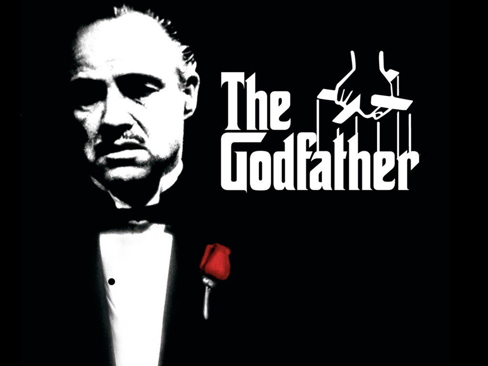

The God Father (I,II,III)

Genre: Drama | Running Time: 175 min.
Release date: March 24, 1972 | On DVD/VOD: October 9, 2001
The Godfather, starring Marlon Brando, Al Pacino, James Caan and Talia Shire, tells an epic tale of Mafia life in America during the '40s and '50s.
Vito Corleone (Brando) is the family patriarch balancing a love of his family with an ambitious criminal instinct. At the wedding of the Don's daughter, Connie (Talia Shire), youngest son Michael (Pacino) is reunited with his family.
A subsequent assassination attempt leaves the Don too ill to run the family business, forcing Michael and Sonny (Caan), with the help of consigliere Tom Hagen (Robert Duvall), to lead the Corleones into a vendetta-filled war with other mob families. Violent revenge ensues as the family tries to change from its old criminal ways into legitimacy.
"1+1" Intouchables
Genre: Drama | Running Time: 112 min.
Release date: May 18, 2012 | On DVD/VOD: March 5, 2013
When Driss, an ex-con from the projects, is hired to take care of an eccentric French aristocrat named Philippe, his newfound job quickly becomes an unpredictable adventure. Speeding a Maserati through Paris, seducing women and paragliding over the Alps is just the beginning, as Driss turns the often humorous world of upper-class Parisian society upside-down. As this unlikely duo overcome adversity of every flavor in this true story, they also shatter their preconceptions of love, life and each other.
Fast and furious
Genre: Action | Running Time: 107 min.
Release date: April 3, 2009 | On DVD/VOD: July 28, 2009
When a crime brings them back to L.A., fugitive ex-con Dom Toretto (Vin Diesel) reignites his feud with agent Brian O'Conner (Paul Walker). But as they are forced to confront a shared enemy, Dom and Brian must give in to an uncertain new trust if they hope to outmanuever him. And from convoy heists to precision tunnel crawls across international lines, two men will find the best way to get revenge: push the limits of what's possible behind the wheel.
8th mile
Genre: Drama
Release date: November 8, 2002 | On DVD/VOD: March 18, 2003
No matter where we live, no matter who we are, we're all bound by borders... some real, some imagined. Many of us are content to live within these borders. Others are forced to. But some of us need to break out, burst through, even if what lies on the other side is both frightening and unknown. 8 Mile is a story about these boundaries that define our lives, and a young man's (Eminem) struggle to find the strength and courage to transcend them.
 Home
Home